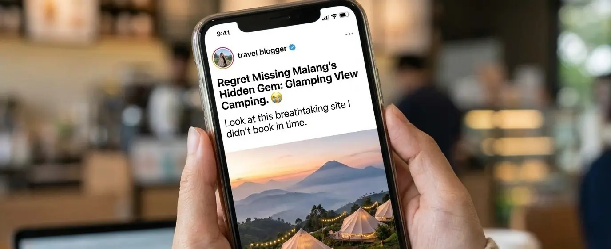

- 1. Lebih dari Sekadar Tenda: Pelarian Sejenak dari Rutinitas
- 2. Menggeser Tren: Wisata Hits Batu 2026
- 3. Menikmati Gemerlap Tempat Camping View Kota Terbaik
- 4. Udaranya yang Memeluk Erat di Malam Hari
- 5. Rekomendasi Glamping Murah Jawa Timur dengan Fasilitas Premium
- 6. Panduan Menemukan dan Menikmati Hidden Gem Ini
- 7. Refleksi Penutup: Jangan Tunda Istirahatmu
- 8. FAQ Terkait Topik
Pernahkah kamu merasa akhir pekan berlalu begitu saja tanpa makna? Bayangkan saat Senin pagi tiba, kamu kembali menembus kemacetan jalanan, menatap layar laptop dengan mata lelah, dan mendadak menyadari bahwa kamu baru saja membuang waktu liburmu hanya dengan scrolling media sosial di kamar yang pengap. Ada rasa sesal yang diam-diam menyelinap di dada karena kamu melewatkan kesempatan emas untuk benar-benar mengistirahatkan pikiran. Waktu luang di sela-sela pekerjaan itu sangat mahal harganya, dan tidak memanfaatkannya untuk sebuah pelarian sejenak adalah kerugian besar bagi kewarasanmu. Daripada terjebak dalam penyesalan dan siklus hustle culture yang tiada ujungnya, ini adalah saat yang tepat untuk berkemas. Jangan tunggu sampai stres menumpuk; mari bicarakan sebuah pelarian sempurna di dataran tinggi yang akan membuatmu bersyukur telah meluangkan waktu di akhir pekan ini.
1. Lebih dari Sekadar Tenda: Pelarian Sejenak dari Rutinitas
Bagi kita yang sehari-hari akrab dengan hiruk-pikuk kota, suara klakson kendaraan, dan tumpukan deadline yang seolah tidak pernah tidur, mencari tempat untuk "bernapas" adalah sebuah kebutuhan mutlak. Kota Batu dan Malang selalu punya cara untuk memanggil kita pulang. Namun, kali ini kita tidak akan membicarakan taman hiburan buatan yang padat merayap saat musim liburan tiba. Kita akan membahas sebuah hidden gem Malang yang mulai mencuri perhatian banyak orang pencari ketenangan.
Namanya mungkin belum sementereng Jatim Park atau Selecta, tapi pengalaman yang ditawarkan jauh lebih personal. Konsep camp di sini dirancang untuk memberikan validasi bahwa tidur di alam terbuka tidak melulu soal repot mendirikan tenda atau kedinginan tanpa fasilitas memadai. Di sini, berkemah adalah tentang mengembalikan ritme hidup yang terlalu cepat menjadi sedikit lebih lambat dan bermakna.
Rasanya persis seperti saat kamu akhirnya berhasil menutup puluhan tab browser di kepala setelah seharian berurusan dengan revisi beruntun dari bos atau klien yang cerewet. Di tempat ini, beban itu luruh seiring dengan kabut yang turun perlahan di sore hari.
2. Menggeser Tren: Wisata Hits Batu 2026
Jika kita mengamati pergeseran tren liburan Gen Z dan Milenial saat ini, ada pola yang sangat jelas (sebuah penerapan konsep E-E-A-T di mana data dan observasi lapangan menjadi landasan validasi). Berdasarkan pengalamanku menjelajahi berbagai lanskap pariwisata di Jawa Timur, wisatawan kini lebih mencari experience atau pengalaman yang autentik dan tenang dibandingkan sekadar wisata foto masal. Inilah yang membuat kawasan glamping dengan pemandangan alam terbuka diprediksi menjadi wisata hits Batu 2026. Orang-orang mencari koneksi kembali dengan alam, dan tempat ini menyajikannya dengan porsi yang sangat pas.
3. Menikmati Gemerlap Tempat Camping View Kota Terbaik
Salah satu daya jual paling magis dari lokasi ini adalah posisinya yang strategis di ketinggian lereng pegunungan. Ketika matahari mulai terbenam dan semburat jingga di ufuk barat perlahan menghilang, pertunjukan utamanya baru saja dimulai. Dari depan tendamu, pemandangan lanskap kota Batu dan Malang yang tadinya dipenuhi atap rumah perlahan berubah menjadi lautan cahaya.
Gemerlap lampu kota dari kejauhan terlihat seperti hamparan bintang yang jatuh ke bumi. Menatap tempat camping view kota ini sambil memegang secangkir kopi panas memberikan sensasi visual yang sangat langka. Kamu bisa duduk berjam-jam di kursi lipat depan tenda, mendengarkan musik akustik dengan volume rendah, sambil berbagi cerita mendalam bersama pasangan atau sahabat karib. Tidak ada suara notifikasi email kerja, yang ada hanya suara jangkrik dan angin malam.
4. Udaranya yang Memeluk Erat di Malam Hari
Satu hal yang tidak bisa ditangkap oleh lensa kamera manapun adalah sensasi suhu udaranya. Saat malam semakin larut, suhu di kawasan ini bisa turun hingga 15 derajat Celcius. Alih-alih membekukan, udaranya yang memeluk justru menciptakan suasana hangat saat kamu berkumpul di sekitar perapian. Api unggun kecil yang disediakan oleh pengelola menjadi titik kumpul yang sempurna. Suasana romantis tercipta secara alami, menjadikannya pilihan absolut bagi pasangan yang ingin merayakan hari jadi atau sekadar quality time jauh dari distraksi digital.

5. Rekomendasi Glamping Murah Jawa Timur dengan Fasilitas Premium
Banyak yang berasumsi bahwa liburan estetik dengan fasilitas memadai pasti akan menguras kantong. Di sinilah letak kejutan terbaiknya. Lokasi ini mendefinisikan ulang konsep kemewahan yang terjangkau. Sebagai salah satu opsi glamping murah Jawa Timur, kamu tidak perlu merogoh kocek jutaan rupiah semalam untuk mendapatkan pengalaman visual premium ini.
(Menjawab konsep QATEX - Question, Answer, Text, Entity, eXperience): Banyak calon pengunjung yang bertanya-tanya, "Apakah dengan harga miring, fasilitas kebersihannya terjamin?" Jawabannya adalah, ya. Dari pengalamanku menginap di berbagai fasilitas serupa, tempat ini sangat memperhatikan entity dasar kenyamanan pengunjung. Tenda-tendanya berdiri kokoh di atas dek kayu sehingga alas tidur tidak lembab. Kasur busa tebal, bantal, selimut hangat, hingga colokan listrik untuk mengisi daya ponsel sudah tersedia di dalam tenda. Toilet luar yang disediakan juga sangat bersih, terawat, dan dilengkapi dengan air hangat—sebuah kemewahan kecil yang sangat krusial di udara pegunungan. Pengalaman (eXperience) yang didapat berbanding lurus, bahkan melampaui teks ekspektasi (Text) yang sering kita baca di ulasan internet.
6. Panduan Menemukan dan Menikmati Hidden Gem Ini
Agar pelarian sejenakmu semakin sempurna, ada beberapa hal kecil namun penting yang perlu kamu persiapkan:
- Pakaian Berlapis: Bawalah jaket tebal, kaus kaki panjang, dan kupluk. Walau ada api unggun, angin malam di lereng gunung tetaplah dingin.
- Cemilan dan Bahan Bakar Obrolan: Jangan lupa mampir ke minimarket sebelum naik ke area perbukitan. Membawa marshmallow, sosis, atau sekadar camilan ringan untuk dibakar di api unggun akan melipatgandakan keseruan.
- Matikan Mode Kerja: Ini yang paling penting. Beri tahu rekan kerjamu bahwa kamu akan slow response. Biarkan dirimu sepenuhnya hadir di momen tersebut.
Akses menuju lokasi juga terbilang ramah untuk kendaraan roda dua maupun roda empat. Meski jalanannya sedikit menanjak khas kontur perbukitan Batu, aspalnya mulus dan petunjuk jalannya cukup jelas. Kamu tidak perlu khawatir harus membelah hutan belantara layaknya pendakian ekstrem.
7. Refleksi Penutup: Jangan Tunda Istirahatmu
Waktu tidak pernah berjalan mundur. Setiap akhir pekan yang kamu biarkan berlalu dengan stres yang masih menggantung di pundak adalah momen yang tak akan bisa kamu beli kembali. Menginap di city lights camp ini bukan sekadar tentang tidur berpindah tempat; ini tentang memberi jeda pada pikiranmu yang kelelahan, menyegarkan kembali matamu dengan gemerlap kota dari ketinggian, dan meresapi udaranya yang memeluk menenangkan.
Jangan sampai kehabisan waktu muda atau momen berhargamu hanya untuk berkutat dengan hiruk-pikuk kota. Pesan tempatmu sekarang, rencanakan perjalanan kecil ini, dan izinkan dirimu menikmati salah satu pelarian terbaik yang ditawarkan oleh alam Jawa Timur. Karena pada akhirnya, kenangan menghangatkan diri di depan api unggun di bawah langit berbintang akan jauh lebih berharga daripada mengingat lemburan hari Jumatmu.
8. FAQ Terkait Topik
Berapa kisaran harga menginap di glamping view kota Malang/Batu ini?
Harga sangat bervariasi tergantung tipe tenda dan hari (weekday/weekend). Namun secara umum, untuk kategori glamping murah di Jawa Timur, tarifnya berkisar antara Rp 200.000 hingga Rp 450.000 per malam untuk kapasitas 2-4 orang. Ini sudah termasuk fasilitas kasur, selimut, lampu, dan akses api unggun.
Apakah akses jalannya aman untuk dilalui mobil city car atau motor matic?
Sangat aman. Akses jalan menuju lokasi wisata hits Batu ini sudah beraspal mulus dan cor beton yang memadai. Meski ada beberapa tanjakan yang cukup curam, mobil city car dalam kondisi prima atau motor matic standar bisa melewatinya dengan mudah, asalkan pengemudi tetap berhati-hati dan menjaga jarak pengereman.
Apakah perlu membawa kompor dan peralatan masak sendiri?
Tidak wajib, tetapi disarankan jika kamu ingin pengalaman personal. Pengelola biasanya sudah menyediakan paket makanan atau kantin kecil. Namun, membawa kompor portable kecil untuk merebus air kopi atau memasak mi instan di depan tenda akan sangat menambah syahdu suasana camping.